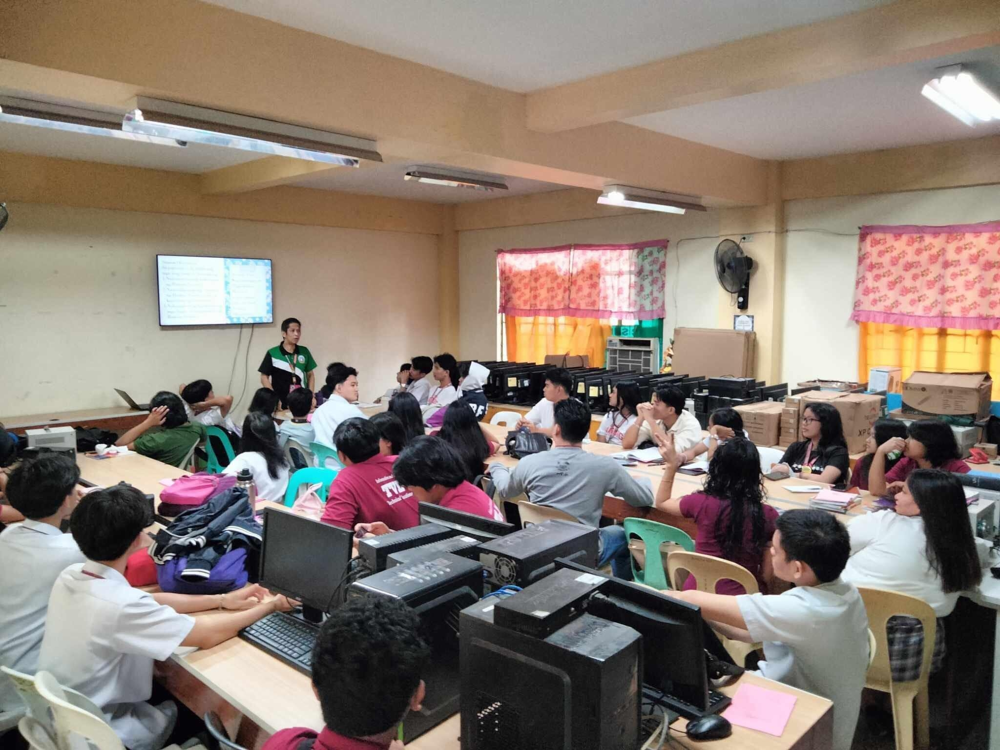

Information and Communications Technology (ICT)
The ICT strand is designed for tech-savvy students who want to dive into the digital world. Learn programming, web development, and more.

- Subjects: Programming, Web Development, Graphic Design
- Career Pathways: IT Specialist, Programmer, Digital Marketer